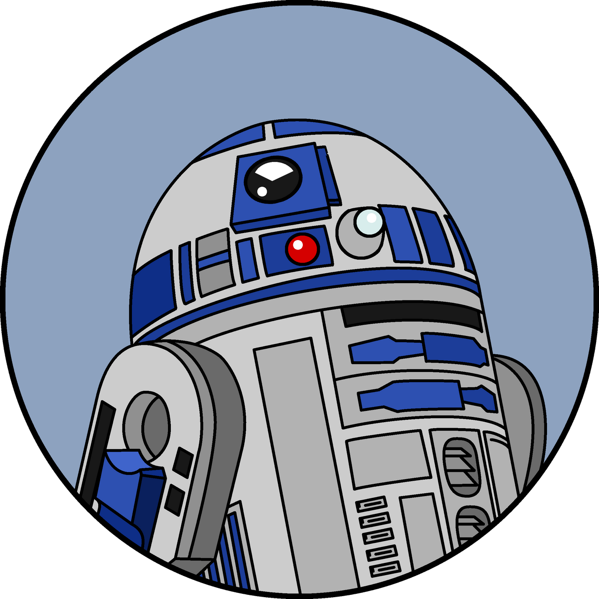
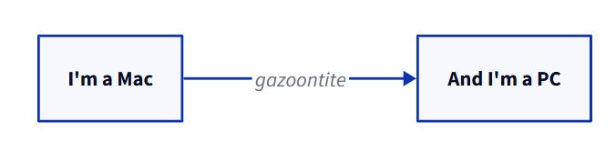

R is for
Authoring!!
Open Office Hours
(September 12, 2025)

Recap of Session
#94:


…D2 Diagrams via
- Download & “run”
*.msioption - Find Application
- Create project folder (within
) - Cut Application & locate within project folder
- Use example script with YAML specs1



Today…

Quarto:
Note
This appears to be a recent extension envelopment with Quarto – was previously accomplished via the Coatless Professor’s embedio extension


R version 4.5.0 (2025-04-11 ucrt)
Platform: x86_64-w64-mingw32/x64
Running under: Windows 10 x64 (build 19045)
Matrix products: default
LAPACK version 3.12.1
locale:
[1] LC_COLLATE=English_United States.utf8
[2] LC_CTYPE=English_United States.utf8
[3] LC_MONETARY=English_United States.utf8
[4] LC_NUMERIC=C
[5] LC_TIME=English_United States.utf8
time zone: America/Chicago
tzcode source: internal
attached base packages:
[1] stats graphics grDevices utils datasets methods base
loaded via a namespace (and not attached):
[1] compiler_4.5.0 fastmap_1.2.0 cli_3.6.5 tools_4.5.0
[5] htmltools_0.5.8.1 rstudioapi_0.17.1 yaml_2.3.10 rmarkdown_2.29
[9] knitr_1.50 jsonlite_2.0.0 xfun_0.52 digest_0.6.37
[13] rlang_1.1.6 evaluate_1.0.4